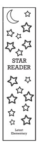

Print Project |
||
| Home Print Project Photo Project Video Project Infographic Project | ||
|
Home Print Project Photo Project Video Project Infographic Project |
 |
The print project was designed to help us understand the process and use of a printing press. I created five different designs and narrowed it down to one. After finalizing my design with the help of Adobe InDesign. We then made a printing plate which then took to the printing press. The bookmarks were sent to Letort Elementary School. |
|
©2024 Kaelyn Samaha |
||